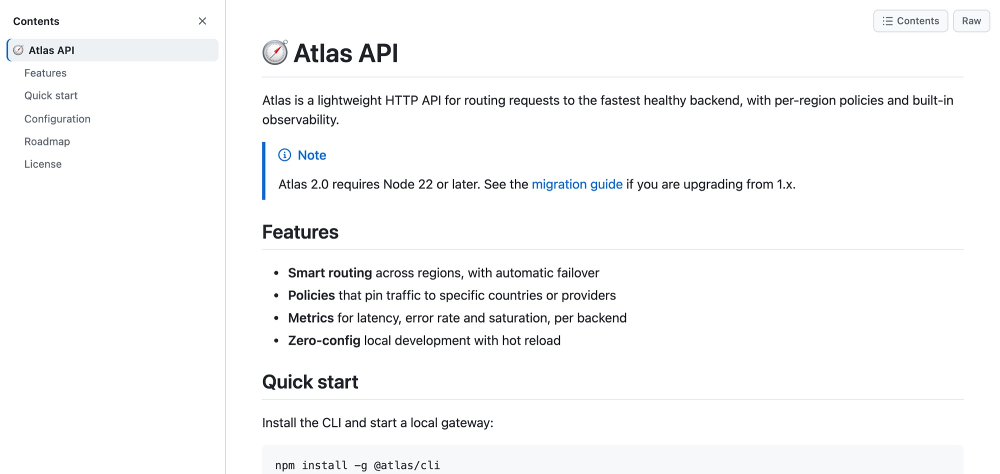
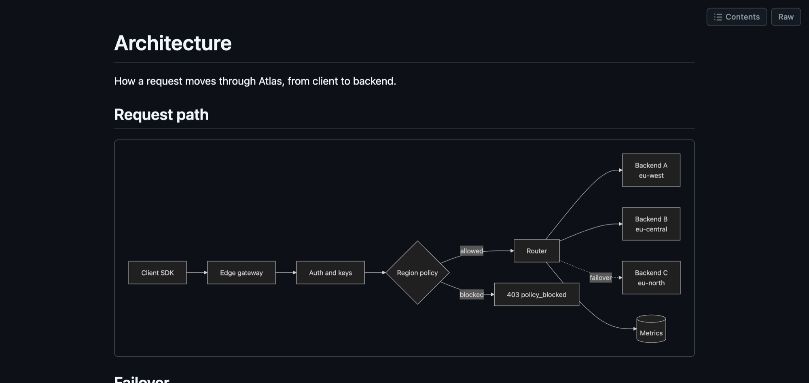
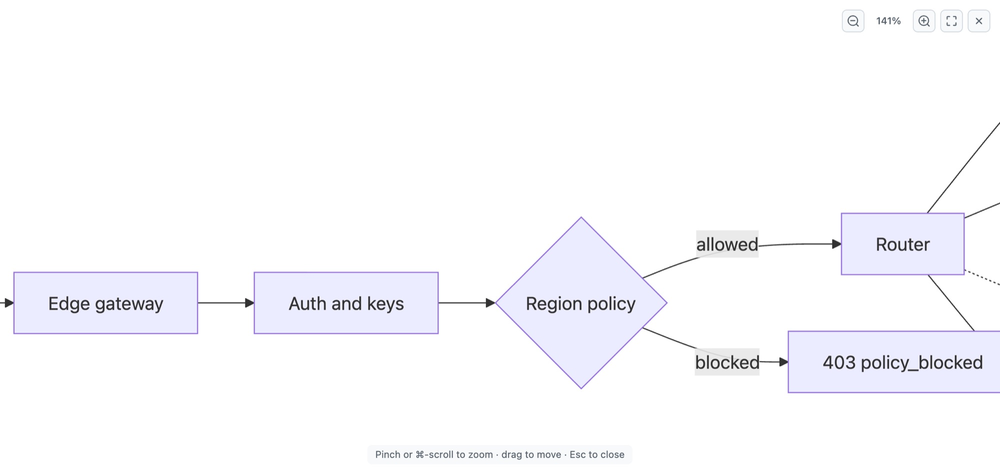
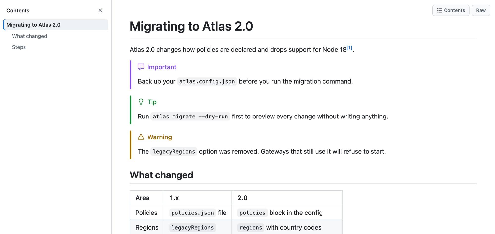
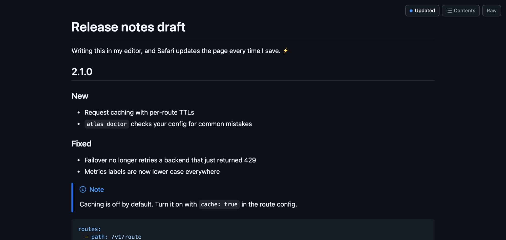

A Safari extension for Mac
Read Markdown, not markup.
Markdown Viewer turns every .md file you open in Safari into a clean, GitHub-style page, with diagrams, a table of contents and live reload.
€1.99 one-time purchase · macOS 12 or later · No data collected

Same file. Two very different reads.
Safari shows Markdown as plain text. Markdown Viewer shows what the author meant.
# Atlas API Atlas routes requests to the fastest healthy backend. > [!NOTE] > Atlas 2.0 requires Node 22 or later. ## Features - **Smart routing** across regions - **Policies** that pin traffic - **Metrics** for every backend Run `atlas dev` to start locally.
Atlas routes requests to the fastest healthy backend.
- Smart routing across regions
- Policies that pin traffic
- Metrics for every backend
Run atlas dev to start locally.
Everything a Markdown file can hold
Built for READMEs, documentation, specs and notes.
Diagrams
Mermaid diagrams, drawn for you
Code blocks marked mermaid become real diagrams, in the same light or dark look as the page.
- Flowcharts, sequence diagrams, Gantt and pie charts
- Loaded only on pages that contain a diagram
- A typo shows the error, never a blank space

Zoom
Big diagrams, readable
Click any diagram to open it full screen. Pinch or scroll to zoom, drag to move, and press Esc to go back. Diagrams stay sharp at any size.
- Trackpad pinch and ⌘-scroll zoom
- Double-click to zoom in, 0 to fit

GitHub Flavored Markdown
Looks the way it does on GitHub
Tables, task lists, footnotes, emoji shortcodes and the five alert callouts all render the way GitHub shows them.
- Note, Tip, Important, Warning and Caution alerts
- Syntax highlighting with a copy button on every block
- Heading links that work, like
#installation

For writers
Live reload while you write
Serve your docs folder on localhost, keep the file open in your editor, and Safari updates the page every time you save. Your scroll position stays put.
- Works with any local server, like
python3 -m http.server - Only local addresses are watched, never other sites

And all the small things
Contents sidebar
An outline of every heading that follows you as you read.
Copy buttons
One click copies any code block, commands included.
Light and dark
Follows your Mac's appearance, diagrams included.
Raw in one keystroke
Press ⌥R to see the original text, and again to go back.
Footnotes
Jump to a note and back, without losing your place.
Emoji shortcodes
:rocket: becomes 🚀, using GitHub's names.
Private
Everything renders on your Mac. No analytics, no tracking, no account.
Safe
Scripts inside Markdown files never run. Every page is sanitized first.
Markdown Viewer for Safari
€1.99 once
- One-time purchase, no subscription
- Every feature included
- macOS 12 or later, Apple silicon and Intel
- Free updates
Prices in other countries are set by the App Store.
Questions
Which pages does it change?
Pages whose address ends in .md, .markdown, .mdown or .mkd, and only when Safari is showing the file as plain text. Pages that are already HTML are left exactly as they are.
Does it work with GitHub?
Yes, with raw files. GitHub's normal file view is already a formatted HTML page, so Markdown Viewer leaves it alone. Click Raw on GitHub, or open a raw.githubusercontent.com link, and the file renders. The same goes for GitLab and other code hosts.
Can I open Markdown files from my Mac?
Safari doesn't run extensions on file:// pages. Serve the folder instead, for example with python3 -m http.server, and open http://localhost:8000/your-file.md. You get live reload that way too.
What data does it collect?
None. It has no analytics, no tracking and no account, and it never sends anything to the developer. Read the privacy policy.
How do I turn it on?
Open the Markdown Viewer app once. In Safari Settings, choose Extensions and tick Markdown Viewer. Then click Edit Websites and allow it on every website. The support page has the details.
Can I hide the toolbar button?
Yes. Choose View, then Customize Toolbar, in Safari and drag the button off the toolbar. Markdown Viewer keeps rendering without it. The button is only there for the on/off switch.
Is there an iPhone or iPad version?
Not yet. Markdown Viewer is for Safari on the Mac.